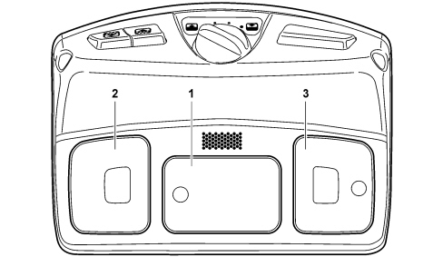
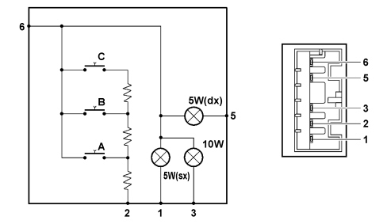
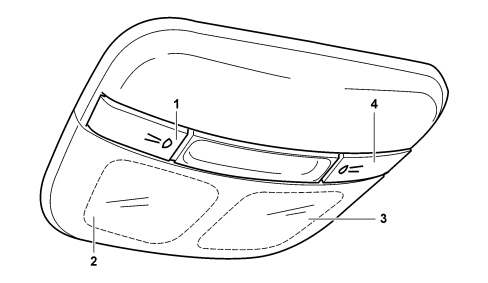
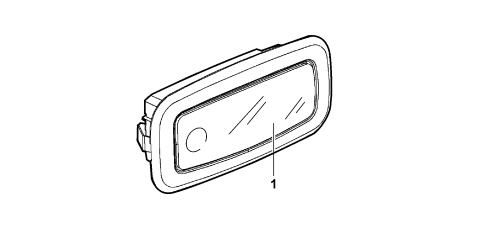
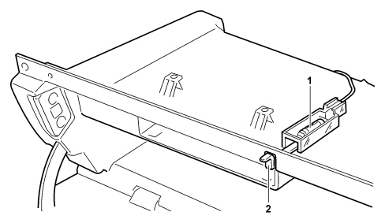
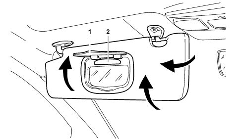
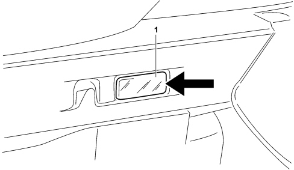

INTRODUCTION - BODY INTERIOR UPHOLSTERY AND TRIM
- Path
- Descriptions > 70 FITTINGS > 7040 BODY INTERIOR FITTINGS AND TRIM > INTRODUCTION - BODY INTERIOR UPHOLSTERY AND TRIM
- Kind
- system description
- Applies to
- all engines; all production periods
- Interactive page
- https://sloeber94.github.io/elrnDB-fCrm/en/#/194002223
Applies to: all engines; all production periods
SPECIFICATIONS
All the vehicle interior trims, designed to satisfy the most stringent international standards governing flammability, are slow burning, do not ignite through accidental contact (for example if a cigarette is dropped), do not develop flames and, in the presence of severe overheating, are subject to combustion that produces strong, dense smoke. The design of the dashboard and the surrounding trims is aimed at producing a high level of comfort and a high degree of passive safety, achieved by eliminating all projections which could be dangerous to the occupants of the vehicle in the case of an impact.
On the inside of the driver's sun visor there is a description of the correct usage of the child seat in the front passenger seat.
For improved comfort there are two sun visors on the left and right, a courtesy light in the front part of the passenger compartment, a centre rear courtesy light (on versions with a sun roof) or two side rear courtesy lights (basic version) and left and right courtesy lights in the luggage compartment. The puddle lights are housed in the door panels in the lower rear area.
The power supply for the vehicle interior courtesy lights follows the battery voltage control logic: the Body Computer acquires the "battery voltage" signal continously comparing it with its own limit value in order to implement the best energy saving strategy.
With the ignition OFF or the key extracted (STOP), a 15 minute timer starts when any of the doors or the boot is opened. The lights are deactivated after this time limit.
COURTESY LIGHT SYSTEM
Front courtesy light
View of front courtesy light.

1 - Centre courtesy light with switch
2 - Left spot light with switch
3 - Right spot light with switch
The electronic diagram and the specific connector for the front courtesy light are illustrated below.

A - Front courtesy light ON/OFF button
B - Left SPOT light button
C - Right SPOT light button
1 - Left SPOT light negative control
2 - Analogue signal from buttons
3 - Centre lamp negative control
5 - Right SPOT light negative control
6 - +30 Supply
By exerting pressure directly on the courtesy light lens cover it is possible to activate and deactivate the switching on and off of the three lamps.
The front courtesy light is managed by the Body Computer Node.
For further details on the courtesy light management logic,
Rear courtesy light
There are two different configurations for the rear courtesy lights that differ depending on whether or not there is a sun roof.
If the vehicle is equipped with a sun roof, there is only one courtesy light located in the centre rear section of the roof.
View of rear courtesy light with sun roof.

1 - Button for activating/deactivating left rear light
2 - Left rear light
3 - Right rear light
4 - Button for activating/deactivating right rear light
By using the left and right buttons, located on the actual courtesy light casing, the lamps can be switched on and off.
The front courtesy light is managed by the driver and passenger door nodes.
View of rear courtesy light without sun roof.

1 - Left or right rear courtesy light with switch
By exerting pressure directly on the courtesy light lens cover it is possible to activate and deactivate the switching on and off of the rear lamps.
Glove compartment light
The glove compartment has a light that makes it possible to see better inside the compartment.
The light comes on when the compartment is opened thanks to a lever that switches the on circuit and switches it off when it is closed.
View of glove compartment light.

1 - Glove compartment light
2 - Lamp switching on control
Sun visor light
The courtesy lights are housed behind the sun visors above the mirror.
View of sun visor light.

1 - Cover
2 - Sun visor light bulb
The lights underneath each of the sun visors are switched on when the cover is opened.
Boot light
There are two courtesy lights to make using the boot easier; they are located on both sides of the lining and they light up automatically when the tailgate is opened and go out when it is closed.
View of boot light.

1 - Boot courtesy light
The boot opening switch sends an earth signal (with the boot open) to the Body Computer and directly to the courtesy lights which allow it to be switched on.
The contact in question also signals the "boot open" status; another contact independently signals the "boot not properly shut" status. The courtesy lights remain on in these two situations.